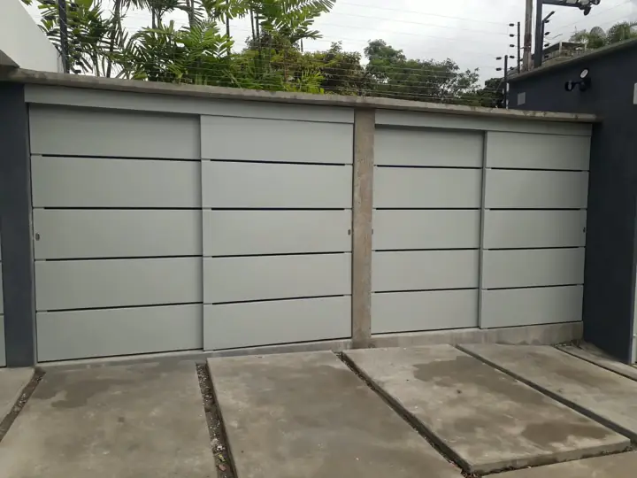
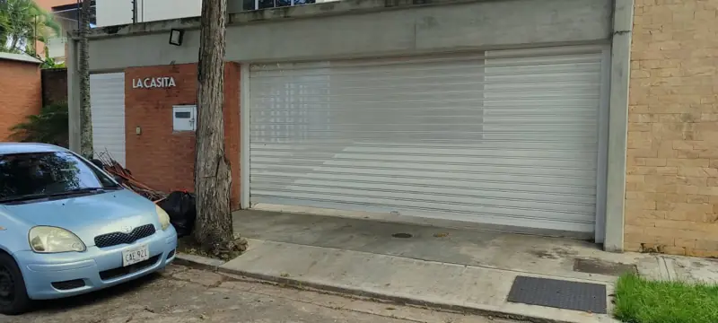
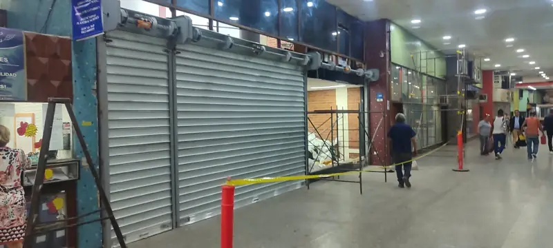
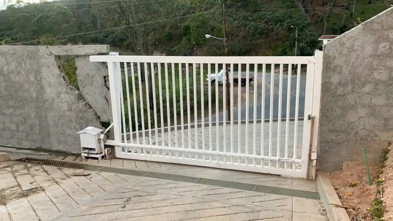
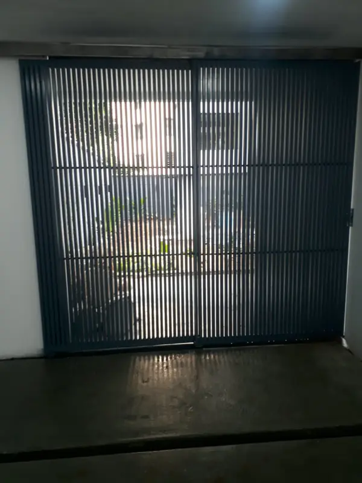
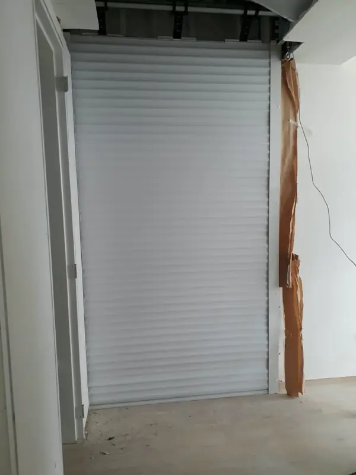
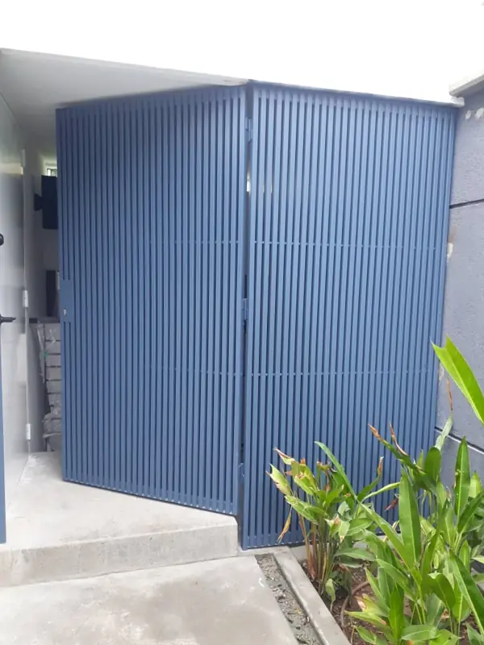
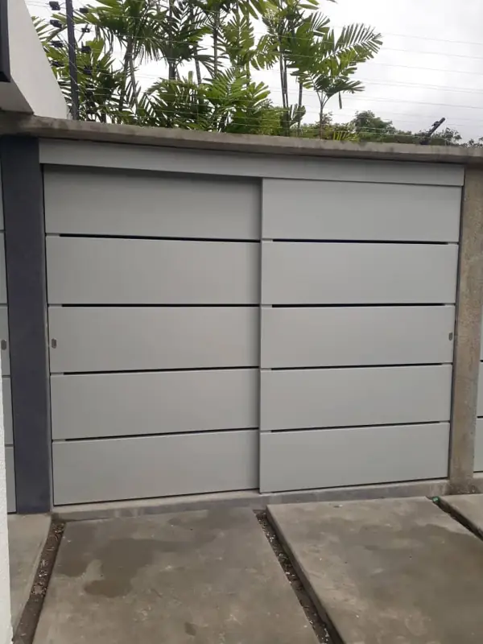
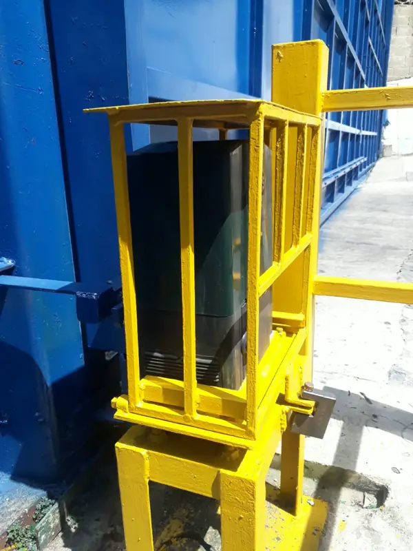

Portones y puertas Santamaría
Para locales, casas y galpones. Fabricación, instalación y reparación.

Caracas · Más de 60 años de experiencia
Fabricamos, instalamos y reparamos. Empresa familiar al servicio de hogares, comercios, empresas y constructoras.
Visita de inspección sin costo en Caracas.
Para locales, casas y galpones. Fabricación, instalación y reparación.
Puertas y rejas a la medida, también entamboradas.
Fabricación, instalación de motores, reparación y mantenimiento. Motores con 1 año de garantía.
Estructuras a la medida para comercios, empresas y constructoras.
Algunos de nuestros trabajos en Caracas.








Construcciones Metálicas El Venado fue fundada en 1967 por Dante Benemeo Granchelli, inmigrante italiano, que levantó este taller para su esposa y sus hijos. Hoy la continúa su familia, con Julio Benemeo Rodríguez al frente.